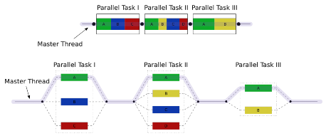

Project Proposal: No-Wait Fork-Join Continuation Stealing Framework
Zhengjia Cao (zhengjic) & Jingzhi Zhang (jingzhi2) November 9, 2022
We would like to implement a fork/join parallel framework with working stealing in C++. We will discuss the trade-off between implementation designs (e.g., Child-stealing strategy vs. Continuation stealing, Different implementation of
distributed work queue, etc.) and measure their performance. On multi-core PSC machines, we would also like to implement the wait-free strand coordination method mentioned in Nowa [1] and reproduce their benchmark against Cilk plus, TBB and OpenMP.
The URL of project web page is https://github.com/rivers-parallel/rivers- parallel.github.io.
For modern computer with multiple cores, scalability of parallelism is important. Fully strict Fork/Join model of concurrent run-time (like Cilk) can guarantee scalability by dynamically allocating and divide tasks until each task reaches a certain granularity. Once the subtasks have been created, threads can execute these subtasks in parallel until they’ve reached the barrier created by Join and continue to execute in sequential order. Program that requires heavy-workload computations can benefit from the model without too much overhead.
However, the scalability of most of current fully strict Fork/Join models suffer from the locking used in the system implementation. Nowa [1] presents a wait-free continuation stealing approach to further scale the parallelism on machine with large number of processing units. We will follow the same design and transform hazardous race conditions and replace the requirement of using a lock with atomic counters.
There are mainly two challenges of implementing the framework: Firstly, we need to come up with an implementation that minimize the scheduling cost

Figure 1: Illustration of a basic fork-join model
and consider different tradeoffs between different stealing policies and lock-free synchronization methods. Secondly, we need to design different scenarios and test the speedup of our fork-join framework against Cilk and OpenMP on dif- ferent hardware settings. We’d like to understand the results and analyze which tradeoff in design and implementation is responsible for the difference in per- formance.
We will build our implementation of the framework. However, we will borrow some of the idea from existing implementations like :
Nowa Source Code: https://gitlab.cs.fau.de/i4/manycore/nowa/-/tree/master/
Basic fork-join model: https://github.com/chaoran/fibril/
Implement the basic fork-join model with distributed work queue
Improve the framework to be wait-free and reproduce the result from nowa
Test and compare the framework with other fork-join frameworks (e.g. Cilk) and discuss the tradeoffs.
From the perspective of software, we would like to use the co-routines in C++ 20 to implement the continuation-stealing scheduler. As for hardware, our bot-
tleneck is CPU, so we will develop our code on GHC 8-core machines and do benchmark on PSC 128-core ones.
Week 1: literature review; interface design
Week 2: data structure implementation, mainly about distributed work queue
Week 3: basic work-stealing algorithm implementation
Week 4: wait-free synchronization mechanism implementation
Milestone Report Due: Wednesday, November 30th, 9:00am
Week 5: benchmark; performance-based improvement; visualization
Week 6: report writing; poster preparation
Final Report Due: Saturday, December 17th, 11:59pm
Poster Session: Sunday, December 18th, 1:00-4:00pm